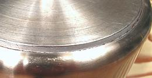
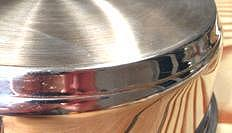
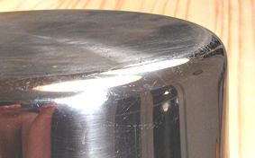
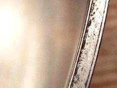
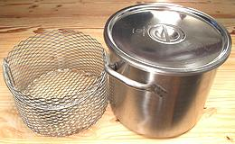
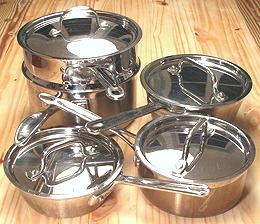
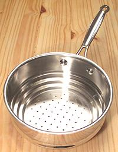
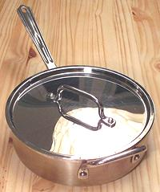
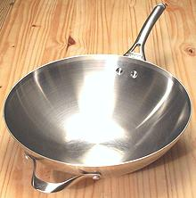
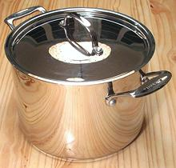

SAFARI
Users
- General & Selection
- Types of Stainless Cookware
- Typical Pans
- Care and Maintenance
General & Selection
Plain stainless is simply out of the picture today except for large stock pots where the ingredients will always be pretty much suspended in water, and for things like roasting pans where material is not particularly important.
Note that Stainless Steel comes in two general varieties - high nickel and high iron. If a magnet sticks to it, it's high iron, which is less corrosion resistant than high nickel. On the other hand, high iron is the only kind that will work on an induction range. Most multiplys are made with high nickel on the inside and high iron on the outside so they can be used on these ranges.
Multi-ply cookware is made in two designs:
- Slab bottom: a plain stainless vessel with an aluminum slab welded to the bottom, usually with an outer stainless layer.
- FullyClad: Here the vessel is pressed from a multi-ply sheet, so the cross section is the same for the entire pan.
I've seen plenty of comparative reviews of sauté pans saying both designs work just fine - but they don't. Reviewers must fear a cut-off of free samples from manufacturers if they tell the truth. Slab bottom sauté pans have a very hot ring at the edge of the slab, making even frying of onions difficult - however - a 5-1/2 quart sauté is so much bigger than the burner this is not a problem (and the slab bottom is a lot less expensive in that size).
Slab Bottom Stainless
Slab bottom pans are excellent for stew pots, stock pots and larger sauce pans where the bottom of the pan is much wider than the burner and the contents will always be pretty liquid.


The photo on the left above shows the construction of a cheaper pan with the edge of the aluminum slab exposed and ending quite far from the edge of the pan. The stainless bottom is very thin, but that isn't a problem. Despite it being a cheap pan, this 3 quart saucepan has given years of satisfactory service, because it is large and only been used with liquids and never for serious frying.
The photo on the right shows a more expensive construction (Cuisinart) with a thicker aluminum slab ending closer to the edge and completely encapsulated in stainless. This is a 2 quart sauté pan and it does exhibit a hot ring around the outside edge when frying, particularly noticeable with chopped onions. Generally the pan is quite usable, but takes extra care with stirring. A cheaper model made like the sauce pot in the previous paragraph might be a lot worse.
Slab bottom is not very good for smaller pans and particularly not good for sauté pans or skillets. I had a cheaper 1.5 quart sauce pan which was usable with liquids, but the handle was so heavy compared to the pan itself it tended to do a back flip off the stove if it didn't have much in it. It had to be replaced with a heavier Cuisinart fully clad model for safety.
Note that my 5-1/2 quart sauté pan is a good quality slab bottom (Cuisinart), and it works just fine. It's so much bigger than the burner the hot edge problem does not appear.
Fully Clad Multi-Ply
Fully clad pans are excellent as sauté pans, skillets and small pans. Chopped onions will brown much more evenly in such a pan than in a slab bottom pan but they are significantly more expensive.


The photo to the left shows the corner of a fully clad pan. It is a smooth curve from bottom to side and the pan is the same thickness at all points. The photo to the right shows the cross section, two very thin sheets of stainless with a thicker aluminum layer in between. Some pans have an inside ply of non-reactive 18/10 (alloy 316) stainless while the outside ply is a less corrosion resistant magnetic stainless so the pans will work on induction ranges.
The fully clad design is not as good as the slab for large stew or stock pots where the bottom is much wider than the burner and the contents are more liquid. The aluminum layer of a fully clad pan is quite thin compared to a slab and has more limited heat spreading capacity. This can result in the center of the bottom getting too hot - particularly noticeable with soups containing barley, and thick stews.
Some of the top names in fully clad cookware even make fully clad roasting pans. For roasting a turkey that's a total waste of money - but profitable for the manufacturer, if they can get people to buy them.
Plain Stainless
 Plain stainless once sold pretty well. It didn't dissolve in the food like aluminum, cost a lot less than enameled iron and was a lot lighter than either enameled or bare iron and didn't chip and rust through like enameled steel. The only problem was, it burned the food. Stainless steel has rather poor heat conductivity, so where it contacts flame or burner it gets plenty hot, and the heat doesn't spread out to cooler regions fast enough.
Revere Ware was an attempt to make stainless steel cook decently. It featured a thick electroplating of copper on the bottom, wrapping part way up the side. Revere Ware is still sold, but in 1968 they cut the thickness of the copper by nearly 50%, pretty much destroying its cooking properties. It's probably even thinner today. "Revere Ware" is now owned by World Kitchen, an accumulator of famous but distressed brand names.
Plain stainless is fine for roasting pans where the material makes little difference, and for restaurant size stock pots where the contents will always be very liquid. The photo shows my 20 quart stainless stock pot and it's basket insert (which is not stainless but chrome plated steel). I also have a matching 12 quart which is used to finish stews that have grown too large for my 8-quart slab bottom pot. If there is danger of things sticking to the bottom, I slide my steel comal under it to help spread the heat.
Typical Pans
Multi-Ply Sauce Pans
 Sauce pans are the workhorses of every kitchen, and multi-ply construction is excellent for these pans. Smaller pans should be fully clad, but 3 quarts and up can be slab bottom.
Those shown in the photo are the ones I use, and at least one of them
is used every day. Lower left is a 1 quart Windsor and the upper right
is a 2 quart Windsor. Windsor pans have sloping sides which makes whisking
easier. That it's for more surface area for reducing sauces makes no
sense, the reduction comes from bubbling steam off the bottom. Lower
right is a 1.5 quart standard straight sided sauce pan. Upper left is a
3 quart no-name slab bottom sauce pan fitted with a steamer pan. All the
other pans are Cuisinart fully clad.
Steamer Pan
 This is a kitchen essential for cooking vegetables and some seafood - a steamer pan that fits on the top of one or more of your sauce pans. This Cuisinart pan is stepped so it fits several sizes of sauce pan, but I always use it with the 3 quart, the largest it fits. It's plain single ply stainless and I don't think anyone makes any other kind because that would be absurd.
Multi-Ply Sauté Pans
 Sauté pans are not as good for sautéing (verb) as a skillet, but they are perfect for sautés (noun). Unless you are strictly a meat and potatoes person (and if you are, you probably wouldn't be reading this site) at least one of these is a kitchen essential. Sauté pans should be fully clad if at all possible, to avoid a hot ring around the edge.
I have three of these: a 2 quart, a 3-1/2 quart and a 5 quart. The
5 quart is slab bottom, but is so much bigger than the burner it works
fine for what I use it for, and at that size cost is a major issue. The
3-1/2 quart is the one that gets used constantly, the 2 quart less often
(and often to stand in for an already occupied sauce pan), and the 5
quart is the party workhorse.
Multi-Ply Wok
 The photo is of my 13 inch Calphalon wok. It gets a lot of use, depending on what cuisines I am doing at the time. It is not quite as temperature responsive as a sheet steel wok, but much more so than a cast iron wok and it's easier to clean than either. I recommend it highly - but you need to get a wok lid and steamer rack for it too. Aside from Chinese cuisine, use a wok whenever you cook greens that will start bulky and wilt down.
At 13 inches this one is as small as is practical for a wok. Having a small flat at the bottom, it rests directly on burners for excellent heating, but the flat part is not large enough to interfere with regular wok function. Not needing a ring stand is a great convenience.
All Clad has a 14 inch one that sells for about 2015 US $199, which
is over $100 more than the Calphalon. At that price, I'm perfectly
willing to use my excellent Atlas 14 inch spin formed sheet steel wok
and a ring stand. All Clad calls theirs an "Open Stir Fry Pan" because
of the rather large flat area at the bottom. I prefer the small flat.
Slab Bottom Stock Pot
 For making stock, almost any material will work fine, though I recommend strongly against bare steel unless the pot is used constantly, as in a restaurant. On the other hand, I make large amounts of soups and stews, and there the thick aluminum slab on the bottom is highly desirable.
I have a 5 quart no-name and an 8 quart Cuisinart, both of which are
used very often. If you routinely cook for a bunch of people a 12 quart
would be a good idea, As mentioned above I have a 12 quart and a 20 quart
in plain stainless.
Care & Maintenance
Stainless and multi-ply cookware needs very little maintenance. Some pieces do pick up a bit of mineral deposits from the water and should be cleaned with hot vinegar now and then, particularly a wok because mineral deposits can cause stuff to stick to it.
Do not fear to clean this cookware with a kitchen cleanser like Comet but do not use abrasive pads or steel wool.
Other than that - just don't over-heat it. Temperatures should be kept down around 450°F/230°C. At temperatures much higher than that you risk delamination of the metal layers. If there's ginger in a badly burned pan it'll eat big pits into the stainless.